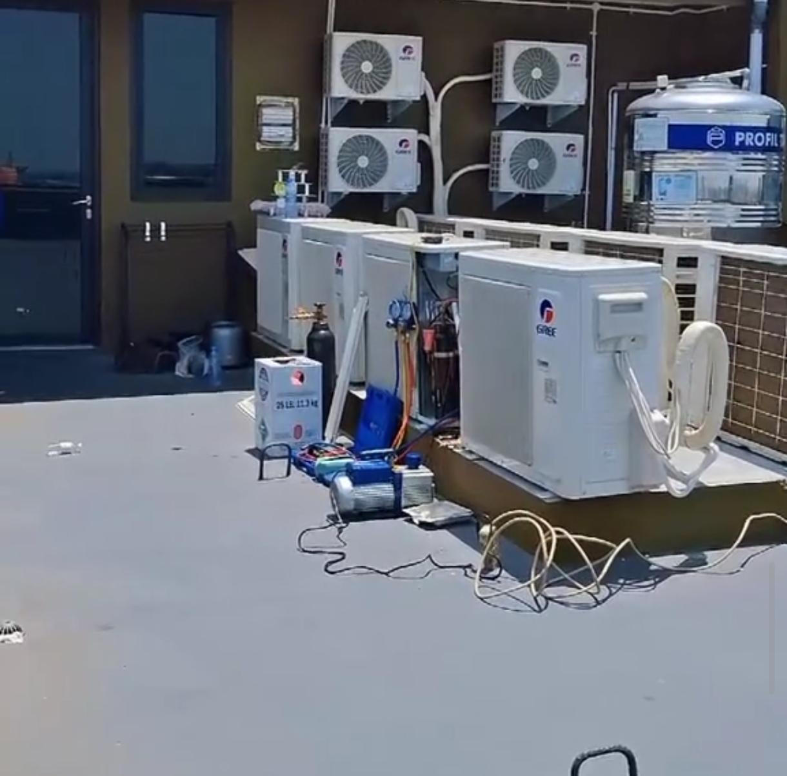
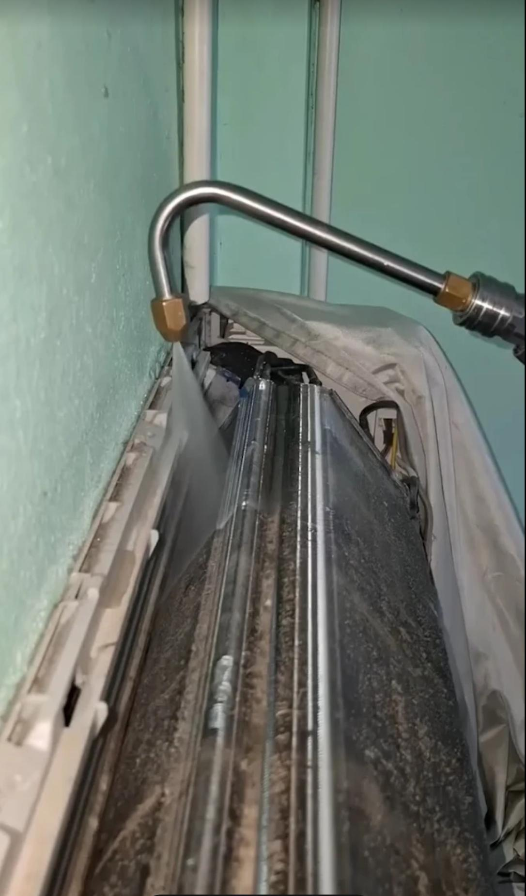
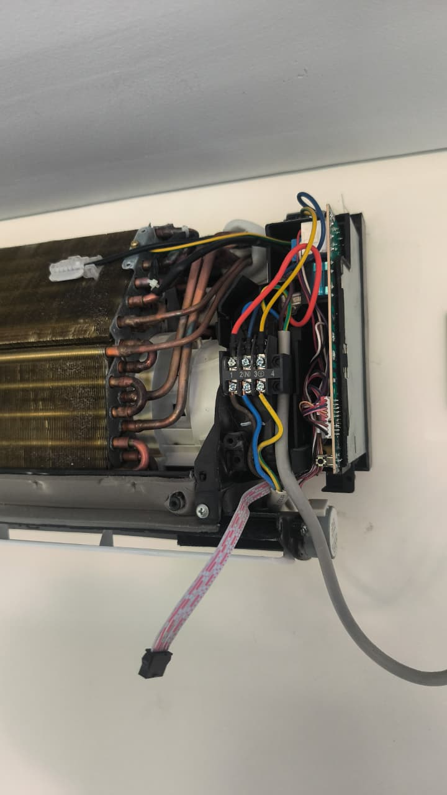
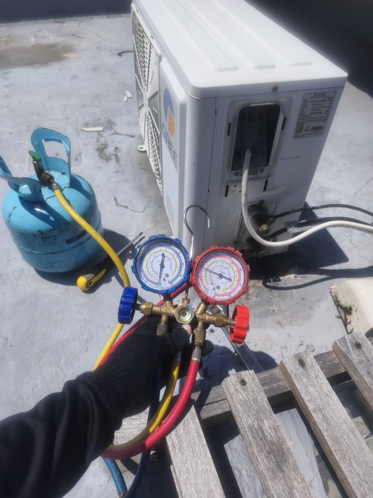

"AC Anda cuma keluar angin tapi nggak dingin? Sama kayak dia, cuma kasih harapan tapi nggak ada kepastian."
PANGGIL MULTI JAYA TEKNIK!

Kami memiliki tenaga ahli profesional untuk mengatasi semua masalah pendingin ruangan Anda dengan cepat dan transparan.

Cuci AC rutin agar udara kembali bersih, segar, dan dingin maksimal. Mencegah kerusakan.

Pemasangan AC baru atau pemindahan unit lama dengan instalasi yang rapi dan aman.

Pengisian freon sesuai standar tekanan pabrik agar performa pendinginan kembali optimal.
Kontrak service berkala untuk kantor, rumah, atau instansi agar AC lebih awet.
Perbaikan AC bocor, mati total, penggantian sparepart, dan keluhan lainnya.
Kepuasan Anda adalah prioritas utama Multi Jaya Teknik.
"AC di vila daerah Kuta tiba-tiba mati tengah malam. Untung ada Multi Jaya Teknik yang siap dipanggil 24 jam. Teknisi datang cepat, langsung dingin lagi!"
"Pelayanan sangat memuaskan dan transparan. Nggak ada biaya tersembunyi. Cuci AC sangat bersih sampai ke sela-sela. Rekomen banget buat warga Denpasar."
"Langganan tetap kantor kami untuk service berkala bulanan. Teknisi ramah, profesional, dan kerjanya cepat. Sukses terus Multi Jaya Teknik!"
Klik tombol di bawah, AC dingin seketika!
Siap Meluncur ke Lokasi Anda di Denpasar & Sekitarnya